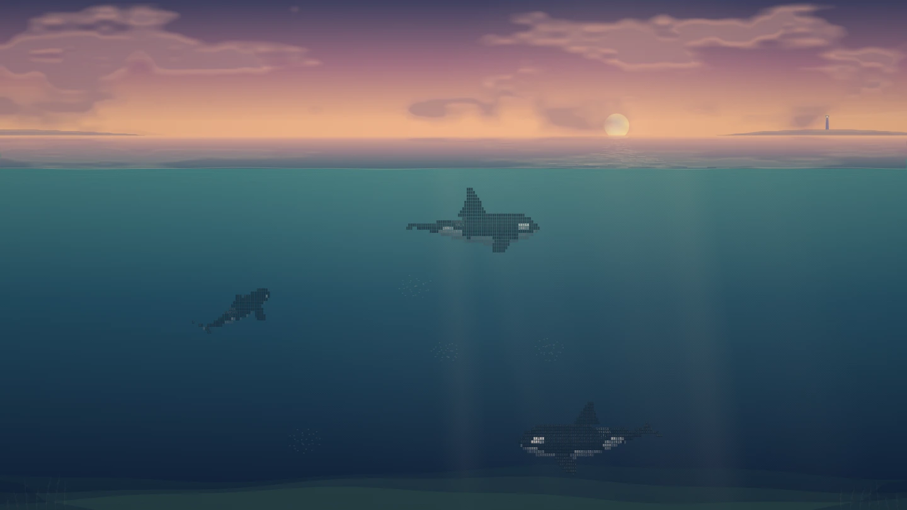

ASCII ORCA / A LIVING SEASCAPE
潮汐之间
从月下深海，到落日余温。八个时刻，同一片海。
08 LIGHT STUDIES · 03 COMPOSITIONS
DEEPSEEK HARNESS WALLPAPER / 0.4
DEEPSEEK HARNESS WALLPAPER / 0.4

构图
晚霞 · 桃金云海
桃金色云缘映入海面，水下渐渐转为深青与靛蓝。推荐先看这版，再比较正午和深夜。
当前为静态预览。播放后，鲸鱼会按自己的节奏巡游。
一日光序
点击画面切换；光源、云层、海面与水下光色一起变化。
海与天的分量
同一时刻的三种构图。33% 较平衡；28% 留出更多深水。
观察动作与日常节奏
上浮先抬头、通过尾部拍动沿弧线前进，接近水面时放平。下潜保留尾柄的上下推进；胸鳍会改变角度，转弯从躯干逐节传到尾部，保留惯性。巡游之外也有近海床停留、短时追逐和偶尔翻滚。
“观察换气喷雾”从接近水面的姿态开始，只有真实出水的呼吸孔才会出现短暂雾气。“上浮后下潜”先换气再潜入深水。动作检查会重新开始一段场景，方便观察；日常壁纸不会不断上演同样的动作。
日常主鲸第一次可见换气在约一分钟后，之后间隔数分钟；只有部分换气有明显喷雾。主鲸第一次跃出在八分钟以后，随后至少间隔十五分钟。这是适合长期观看的艺术节奏，不代表野外生理频率。
自动版按设备当地时间进入八个时段，画面本身无文字与按钮。小鱼会聚群、逃离、重新聚拢，捕获要求嘴部实际接近；更细暗的微粒只是水中悬浮物。支持暂停、离屏暂停与系统的“减少动态效果”。
跟随当地时间 ↗